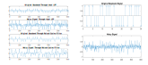

Yixuan Huang (Ȫщ∫¶ËΩ©)üéì Undergraduate Student @ Wuhan University of Technologyü§ñ Research Interests: Roboticsyixuanhm@gmail.com / Google Scholar / GitHub / Twitter / CV_25.07 / [Full Contact] |
|
Biography
Hi! My name is Yixuan Huang, a final-year undergraduate student at Wuhan University of Technology, majoring in Electronic Information Engineering. I am passionate about robotics and artificial intelligence, and currently working on computer vision and task planning.
My research interests include enabling robots to autonomously acquire skills through interaction with the environment and collaboration with humans. I focus on improving the robustness, reliability, and safety of robot behaviors in real-world settings, which is crucial for applications such as household service robots and logistics manipulators. I am also interested in navigation and decision-making in dynamic and uncertain environments, a key challenge for autonomous driving and mobile robotics.
My long-term goal is to contribute to the advancement of embodied intelligence and the understanding of physical interaction, enabling robots to generalize from limited supervision and adapt to novel tasks and environments.
I am currently seeking research internship opportunities. If you are recruiting a research assistant or intern, please feel free to contact me at yixuanhm@gmail.com. I would be delighted to explore potential opportunities for collaboration.
Education
|
Wuhan University of Technology
(WHUT) GPA 91.0 / 100 Sep. 2022 - Persent |
Honors & Awards

|
China College Engineering Practice and Innovation Competition Provincial First Prize, Ranked 2nd Nationwide üèÜ With Zheng Zhang, Wentao Huang, Zeqi Yao. Supervised by Prof. Yi Zhong. Project Link: https://github.com/yixuanhuang04/autonomous-driving-sim |
- [2025] Excellent Student, Wuhan University of Technology, Top 1%
- [2024] First Prize Scholarship, University Scholarship, CNY 3,000
- [2024] Excellent Student, Wuhan University of Technology, Top 1%
- [2023] Second Prize Scholarship, University Scholarship, CNY 2,000
- [2023] Excellent Student, Wuhan University of Technology, Top 1%
Experience

|
Shanghai Artificial Intelligence Research Institute, Shanghai
Aug. 2025 - Present
Research Intern
Research Focus: Computer Vision and Robotics
|

|
Rutgers University, New Brunswick
Jun. 2025 - Present
Research Intern (Supervisor: Prof. Jingjin
Yu)
Research Focus: Robotics and Task Planning
|
Projects

|
Plant3D: A Self-Constructed Plant 3D Reconstruction Dataset
2025
A self-constructed dataset for RGB-D based plant 3D reconstruction, containing multiple
reconstructed plant instances with raw, masked, sparse, and dense results. Project Link: https://huggingface.co/datasets/yixuan-huang/Plant3D |

|
Obj3D: A Self-Constructed Multi-Object 3D Reconstruction Dataset
2025
A self-constructed dataset for RGB-D based 3D reconstruction of multiple object
categories, useful for benchmarking and validating reconstruction pipelines. Project Link: https://huggingface.co/datasets/yixuan-huang/Obj3D |

|
Handwritten Chinese Sentence Recognition using CNN-CTC
2025
End-to-end handwritten Chinese text recognition system using CNN, BiLSTM, and CTC. |

|
Pathology Slide Classification & LLM Distillation
2025
Automatic pathology slide classification with CNNs and LLM-based knowledge distillation. Project Link: https://github.com/yixuanhuang04/histopathology-classification |

|
Scene Graph Generation
2025
Implemented structured visual understanding pipeline for modeling object relationships. Project Link: https://github.com/yixuanhuang04/scene-graph |

|
Electronic Password Lock System
2025
FPGA-based secure access system with password reset and unlock features. |

|
Multifunctional Digital Clock
2024
Designed external circuits and firmware on a microcontroller; implemented Pomodoro timer,
countdown, and stopwatch functions. |

|
Tourism Website Big Data Analysis
2024
Web scraping with Jsoup, storage in HBase, visualization with ECharts for hotel pricing and
reviews. Project Link: https://github.com/yixuanhuang04/tourism-analytics |
|  |
Digital Baseband Transmission System Simulation
2024
Baseband communication model with filtering, noise analysis, and eye diagrams. |

|
Frequency-Domain Analysis of Discrete-Time Signals and Systems
2024
Implemented DFT/IDFT to analyze signals and system stability in frequency domain. |

|
Multi-Functional Quiz Buzzer System
2024
8-channel digital quiz buzzer with countdown timer and priority logic. |

|
Electronic Music Box
2023
Custom PCB-based music box with selectable songs and light circuits. |

|
Electronic Keyboard
2023
21-key digital keyboard with adjustable pitch and tone synthesis. |
Leadership & Service
Beyond Academia [Explore My Life]
I'm glad you've made it this far. By now, you probably have a sense of my academic journey and achievements—but that has never been the whole of who I am. Beyond research, there is also life, full of moments, passions, and connections that quietly shape who I am. In this section, I want to share a different side of me: the person beyond work, the more genuine me.
It is these moments, interests, and memories that make me who I truly am. I sincerely hope that while pursuing your own academic or professional path, you also find joy in life—because these experiences are irreplaceable and deeply meaningful.
I am grateful to my family, friends, and colleagues, who are not only vital to my academic life but also the ones who bring richness and meaning to my everyday existence. And if you are reading this now, I hope that someday we may share a wonderful experience together too.